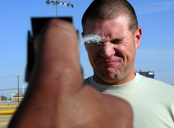
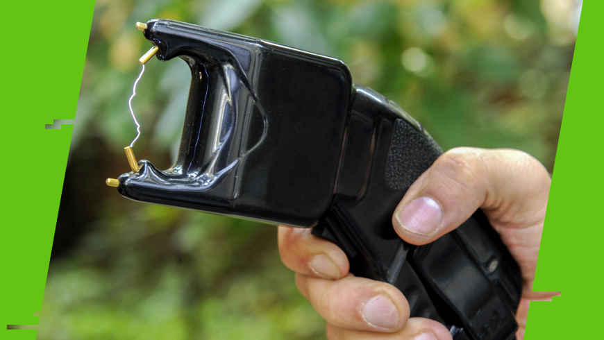
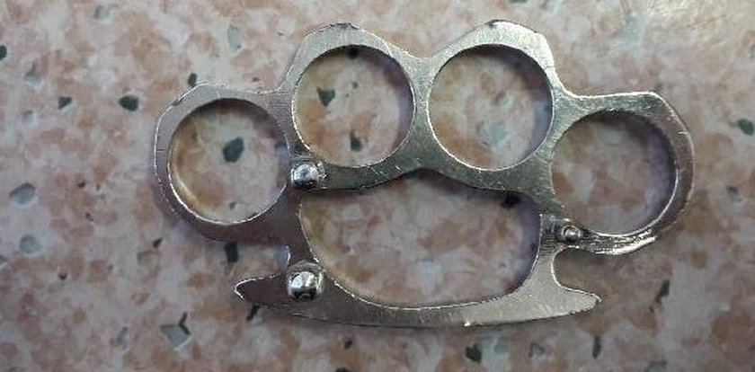

Samoobrona w Polsce.
Statystyki z roku 2018 pokazały, że 86% Polaków uważa, że w Polsce czuje się bezpiecznie, a częstotliwość przestępstw dokuczliwych społecznie, takich jak napady czy kradzieże, spadła. Choć więc Polskę można uznać za kraj bezpieczny, to istnieją miejsca w których lepiej się bezbronnie nie pokazywać czy osoby które, po wypiciu jednego kieliszka za dużo, będą szukały zwady. Tak więc znajomość i posiadanie środków samoobrony ciągle zaliczyć można do rzeczy społecznie pożądanych.
W przypadku znalezienia się w niebezpiecznej sytuacji do środków samoobrony sięgamy w ostateczności. Przede wszystkim, zagrożenia należy unikać, gdyż konfrontacja nawet posiadając środki do samoobrony może się skończyć dla nas niekorzystnie (zarówno prawnie jak i fizycznie). W niektórych sytuacjach wystarczy głośno krzyknąć by zwrócić na siebie uwagę innych. Co jednak, gdy byłoby to nieskuteczne? Wtedy rozwiązaniem mogą być pałki teleskopowe, gazy pieprzowe czy paralizatory - legalne i skuteczne środki samoobrony.
Broń palna - zarówno niewymagająca pozwolenia jak i ta, która wymaga od nas jego posiadanie, NIE JEST środkami służącymi do samoobrony. Chociaż przepisy literalnie tego nie zabraniają (mówią jedynie o współmierności zastosowanych środków), to konsekwencje użycia albo nawet grożenia bronią mogą znacząco przewyższać korzyści.

Sprawy sądowe w tej kwestii potrafią być bardzo długie i niezwykle nieprzyjemne. Znam historię człowieka, który nawet mimo posiadania pod ręką pistoletu (wracał ze strzelnicy), oddał rabusiowi portfel, gdyż świadomy możliwych konsekwencji doszedł do wniosku, iż taniej i prościej będzie pójść na rękę bandycie.
Broń palna jest ostatecznością, ostateczności. Według przepisów prawa:
Art. 25.
§ 1. Nie popełnia przestępstwa, kto w obronie koniecznej odpiera bezpośredni, bezprawny zamach na jakiekolwiek dobro chronione prawem.
§ 2. W razie przekroczenia granic obrony koniecznej, w szczególności, gdy sprawca zastosował sposób obrony niewspółmierny do niebezpieczeństwa zamachu, sąd może zastosować nadzwyczajne złagodzenie kary, a nawet odstąpić od jej wymierzenia.
§ 2a. Nie podlega karze, kto przekracza granice obrony koniecznej, odpierając zamach polegający na wdarciu się do mieszkania, lokalu, domu albo na przylegający do nich ogrodzony teren lub odpierając zamach poprzedzony wdarciem się do tych miejsc, chyba że przekroczenie granic obrony koniecznej było rażące.
§ 3. Nie podlega karze, kto przekracza granice obrony koniecznej pod wpływem strachu lub wzburzenia usprawiedliwionych okolicznościami zamachu.
Art. 423
Kto działa w obronie koniecznej, odpierając bezpośredni i bezprawny zamach na jakiekolwiek dobro własne lub innej osoby, ten nie jest odpowiedzialny za szkodę wyrządzoną napastnikowi.

Prawnie więc jesteśmy uprawnieni do samoobrony, jednakże istnieją obostrzenia względem tego jakich środków możemy użyć, aby nie przekroczyć granicy obrony koniecznej. Krótko mówiąc, najlepiej jest zastosować jeden z wymienionych poniżej środków służących do samoobrony.
Gaz pieprzowy:
Zgodnie z prawem jest to jeden z możliwych środków do samoobrony. Koszt jego jest niewielki (około 40zł) a skuteczność zadowalająca. Mały pojemniczek jest zgrabnym narzędziem łatwym do chowania do kieszeni lub torebki. Warto pamiętać, iż w niektórych szczególnie chronionych miejscach i na imprezach masowych nie możemy prawnie posiadać gazu pieprzowego.
Co do użytku gazu, przede wszystkim należy zapoznać się z instrukcją producenta. Ze swojej strony dodam, iż gazu najlepiej jest używać z pewnej - chodź niewielkiej - odległości, aby przypadkiem nie unieszkodliwić samego siebie. Celować należy w: oczy, twarz, ewentualnie klatkę piersiową. Gaz pieprzowy również potrzebuje chwili zanim zacznie w pełni działać, tak więc po „oddaniu strzału” powinniśmy od razu zacząć uciekać. Wymagane 18 lat.
Paralizator:
Paralizator to elektryczne urządzenie obronne, które wytwarza prąd o dużym napięciu, ale niskim natężeniu, które nie zagraża życiu osoby nią potraktowanej. Zgodne z prawem (bez posiadania pozwolenia) są paralizatory o wartości w obwodzie nie przekraczającej 10mA. Paralizator działa na układ mięśniowy i nerwowy bez problemu unieszkodliwiając cel. Istnieją paralizatory wystrzeliwujące diody niczym pistolet na niewielką odległość i paralizatory stosowane bezpośrednio na celu. Pierwszy wariant jest dużo droższy i przeważnie daje nam tylko jedną szansę jego użycia w krótkim odstępie czasu, drugi jest znacznie tańszy i niemniej skuteczny. Dla paralizatora nie stanowi problemu zwykła warstwa ubrań a rażenia nim drugiej osoby nie powinno trwać dłużej niż 5 sekund. Koszt paralizatora jest większy niż gazu pieprzowego a jego rozmiar i kształt zależy od modelu. Nie jest jednak zbyt skutecznym narzędziem samoobrony ze względu na problemy ze skutecznością. Wymagane 18 lat.

Pałka teleskopowa:
Pałka teleskopowa to stworzony z myślą o samoobronie składany teleskopowo kij. Jest to legalne narzędzie do samoobrony. Istnieją, jednakże warianty, których prawo zabrania. Są to pałki „o szczególnej budowie”: zakończone ciężkim i twardym bądź metalowym materiałem jak i również pałki imitujące kije baseballowe (szczegóły można wyczytać w ekspertyzach policyjnych). Pałka teleskopowa to naprzędzie różniące się od dwóch poprzednich przede wszystkim tym, że wymaga DZIAŁANIA - niczym kijem lub maczugą trzeba nią uderzać! Dlatego jest to rozwiązanie dla osób silnych i sprawnych fizycznie. Nie polecamy tego osobom chcącym mieć coś małego i łatwego do samoobrony. Ponadto w przypadku pałki istnieje także większe ryzyko uznania przez prawo przekroczenia granic obrony koniecznej. Z tych powodów raczej zalecamy zainteresowanie się paralizatorami i gazami pieprzowymi.

Często w przestrzeni publicznej pojawia się także kwestia kastetów, ukrytych noży czy nunczako. Odpowiadamy więc:
Kastety, noże ukryte i broń kłuta, nunczako:
Te narzędzia zgodnie z polskim prawem są ZABRONIONE i nie nadają się do samoobrony. Odradzamy sięgania po te rozwiązania.
Noże:
Również odradzamy. Istnieje duże ryzyko uznania przez prawo przekroczenia granic obrony koniecznej. Jest on także najmniej wygodnym z wymienionych wyżej środków. Przede wszystkim polecamy więc gazy pieprzowe oraz ewentualnie, paralizatory i pałki teleskopowe.
